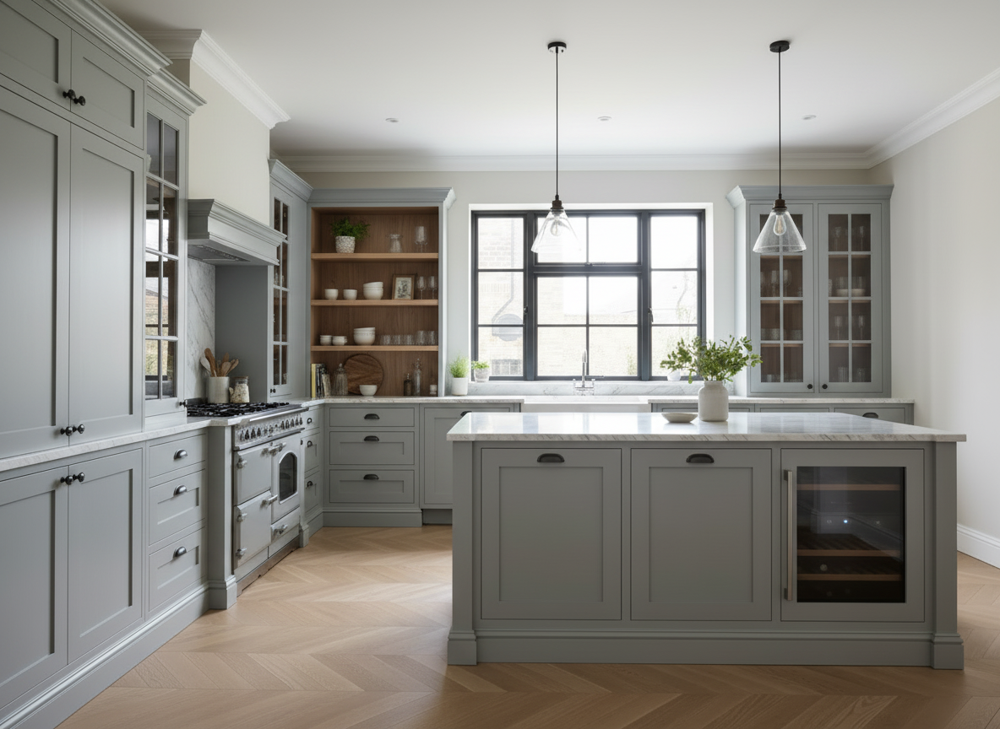

Bespoke Furniture Design UK
Cimer Studio provides bespoke furniture design and technical drawing support for interior designers, private clients and joinery workshops in the UK.
I specialise in design development, production-ready drawing packages, fitted furniture, cabinetry and detailed joinery solutions for high-end interiors.
With over 15 years of hands-on workshop experience, I focus on creating buildable, elegant and well-detailed furniture solutions that bridge the gap between design intent and fabrication.
See also: technical furniture drawings | custom furniture design
Back to homepage